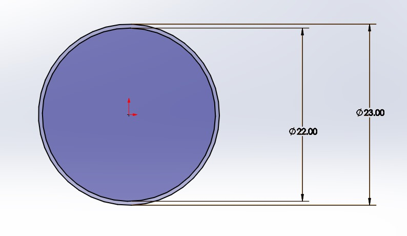
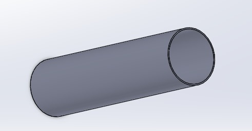
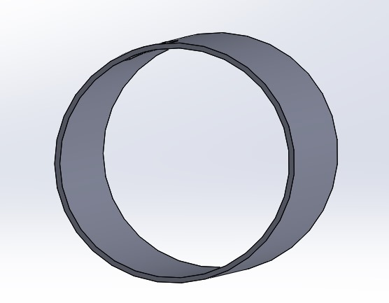
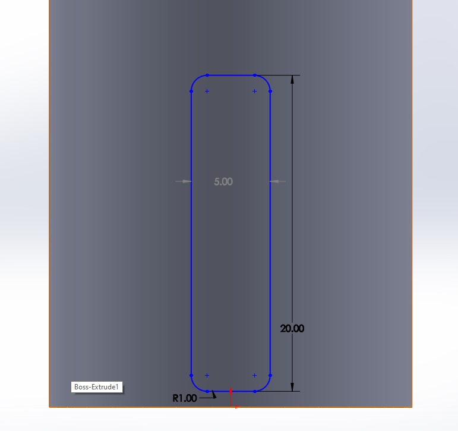
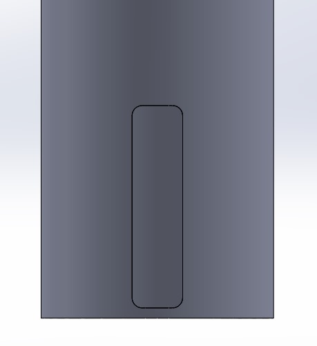
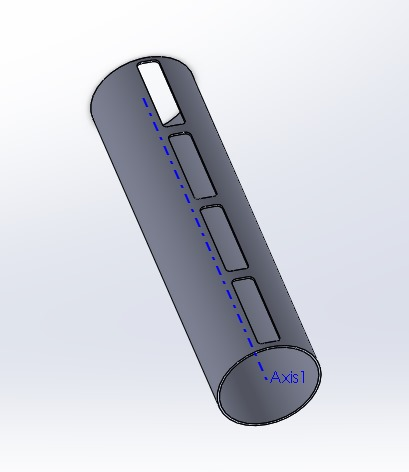
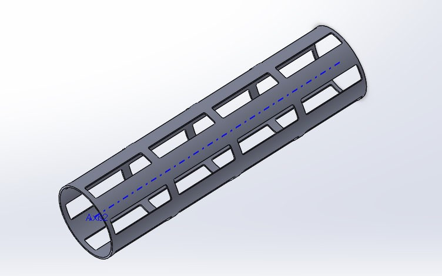
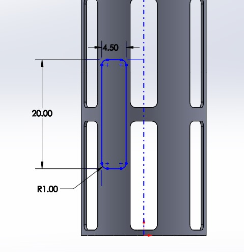
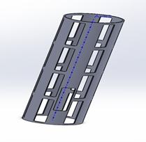
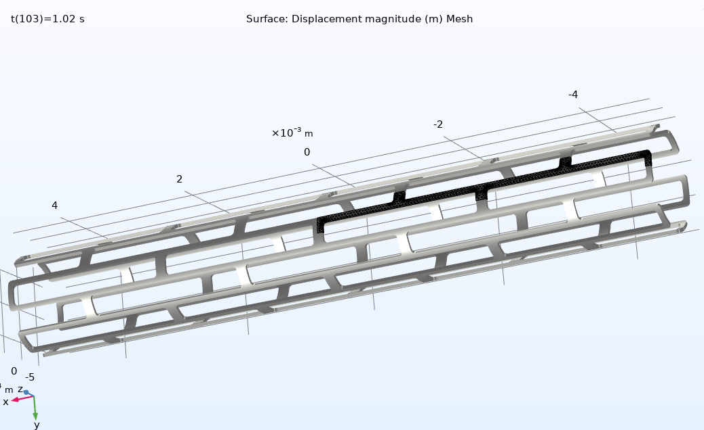

Compare mechanical responses
Estimated maximum stress (MPa)
Table 2 estimates were read from color scales, not exported solver values. Negative foreshortening in Table 3 corresponds to axial elongation.
From CAD to finite element analysis
SolidWorks geometry → COMSOL Multiphysics 6.0 import and meshing → material properties and boundary conditions → radial loading and deformation analysis.





















Evidence and limitations
The report identifies stress concentrations at strut junctions and ends, and plastic strain at junctions and bends. Cobalt alloy has the highest estimated maximum stress; tantalum has the lowest. Pt-Cr has the smallest reported axial elongation (1.1 mm).
These observations do not establish clinical safety or material superiority. The reported tantalum density (1669 kg/m³) requires verification; all material properties are transcribed as reported. The cobalt stress value follows Table 2 rather than the inconsistent conclusion. Original CAD and solver files are unavailable; no new simulation was performed.
Credits
Original biomedical engineering group project, KUET. Supervisors: Jeba Fairooz Rahman and Kazi Jannatul Ferdowshee. Source: group 2 stent report, sections 3–6, Tables 1–3 and Figures 1.11–1.33.